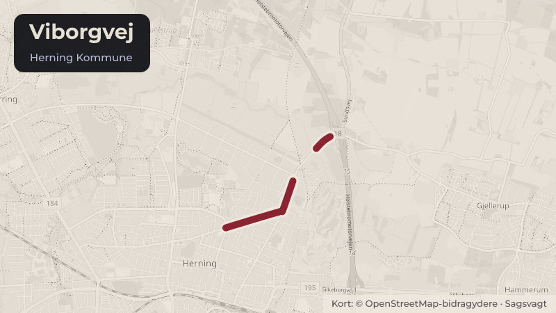

På dagsordenen 10. november, Herning Byråd, Herning
Godkendelse af Skema C. opførelse af 39 almene boliger ved Viborgvej

Kort fortalt
- Hvem
- Herning Byråd, Herning Kommune
- Hvornår
- Tirsdag 10. november 2026
- Status
- På dagsordenen. Sagen behandles på mødet.
Er noget forkert her? Skriv til os
Hvad kan du gøre?
- Sid med til mødet
- Byrådets møder er offentlige, så du kan selv sidde med, når sagen behandles tirsdag 10. november 2026.
Læs hele sagen Kommunens egen tekst
Sagsfremstilling
Boligselskabet Fruehøjgaard har fremsendt skema C til godkendelse.
Til baggrund bemærkes, at Skema A, B og C, der nævnes i denne sag, er benævnelser for de
økonomiske beregninger/skemaer som indsendes af boligforeningen til godkendelse på
specifikke tidspunkter i byggeriets forløb.
Skema A indsendes ved byggeriets idefase, og tallene er baseret på erfaringstal og
forventninger.
Skema B indsendes efter afholdt licitation og er baseret på den/de aktuelt tilbudte priser.
Skema C er det endelige byggeregnskab incl. alle uforudsete udgifter og eventuelle udsving i
de budgetterede tal.
I forbindelse med Skema A sagen i maj 2023, godkendte Herning Kommune en samlet
anskaffelsessum for de 39 boliger på 66,711 mio. kr.
Året efter i maj 2024 godkendte administrationen Skema B med en samlet anskaffelsessum på
Den samlede anskaffelsessum for byggeriet er i det fremsendte anlægsregnskab (skema C)
opgjort til 68,373 kr.
Tallene i Skema B og C fordeler sig således.
Skema B Tilsagn.
Skema C Regnskab.
(opgjort i mio. kr.)
(opgjort i mio. kr.)
Grundudgifter
Entrepriseudgifter
Omkostninger
Gebyrer
I alt
Der er tale om en budgetoverskridelse på 350.000 kr. hvilket svarer til en stigning på 0,5%.
Finansieringen af boligernes anskaffelsessum, som er bestemt af almenboligloven, kan
opgøres som følgende.
Tekst
Realkreditlån. 90% af
anskaffelsessummen
Grundkapitalindskudslån
8% af
anskaffelsessummen
Beboerindskud 2% af
anskaffelsessummen
Skema B
Skema C
finansieringsplan finansieringsplan.
(mio. kr.)
(mio. kr.)
Grundkapitalindskudslån betales af Herning Kommune som et rente- og afdragsfrit lån.
Kommunal garantistillelse
Det følger af almenboligloven, at der skal stilles kommunal garanti for den del af realkreditlånet,
som på lånetidspunktet har pantesikkerhed ud over over 60 % af ejendommens værdi.
Det er suverænt realkreditinstituttet, der vurderer bygningens værdi og dermed garantiens
størrelse. De seneste erfaringer med garantistillelse for nybyggeri viser, at
realkreditinstitutterne i praksis stiller krav om garantistillelse på 64-70,5 %, idet
værdiansættelse af nybyggeriet ikke svarer til anlægssummen.
I forbindelse med Skema A godkendte Byrådet således at stille garanti for et beløb som blev
anslået til 20,013 mio. kr. Den endelige garantistillelse beregnes dog, som nævnt ovenfor, ud
fra realkreditinstituttets vurdering af ejendommens værdi, hvilket ofte ikke vil være i
overensstemmelse med anlægssummen.
Det bemærkes at garantistillelse for almene boliger ikke påvirker kommunens låneramme. Der
skal tilsvarende ikke ske deponering.
Økonomi
I forbindelse med skema A er der givet bevilling til udgiften til kommunalt
grundkapitalindskudslån på 5,339 mio. kr.
På baggrund af den ovenfor anførte overskridelse af budgettet er udgiften til kommunalt
grundkapitalindskudslån, ved skema C, steget med 0,131 mio. kr. til 5,470 mio. kr.
-, ERHVERVS- OG UDDANNELSESUDVALGET INDSTILLER,
at anlægsregnskabet og dermed Skema C på i alt 68,373 mio. kr. godkendes inkl. den
kommunale garantistillelse.
at stigningen i grundkapital tilskuddet på 0,131 mio. kr. finansieres af afsatte midler på
serviceområde 26 indskud i Landsbyggefonden.
Kilde: Herning Kommune, Herning Byråd, dagsorden fra mødet tirsdag 10. november 2026, punkt 4. Læs den originale sag hos kommunen.
Steder i sagen: Viborgvej